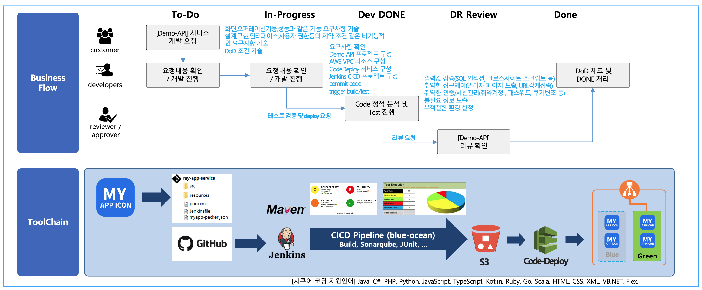
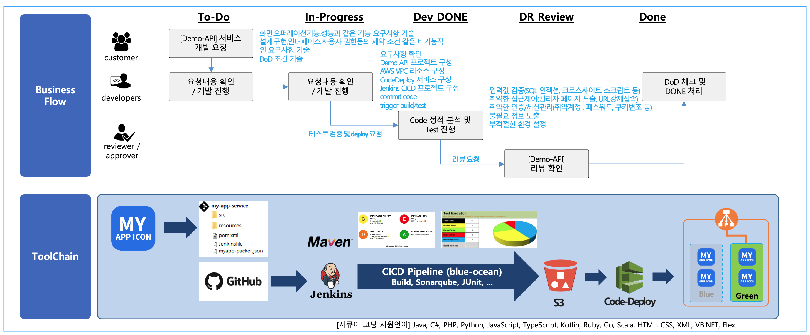

Demo API Application CICD 툴체인 아키텍처
Demo API Application 출시를 위해 DevOps 팀의 비즈니스 프로세스 흐름과, Toolchain을 통한 blue/green 배포 흐름의 예시 입니다.

GitOps 정책과 통해 서비스 출시가 보다 자동화 될 수 있습니다.
Demo API Application 출시를 위해 DevOps 팀의 비즈니스 프로세스 흐름과, Toolchain을 통한 blue/green 배포 흐름의 예시 입니다.

GitOps 정책과 통해 서비스 출시가 보다 자동화 될 수 있습니다.